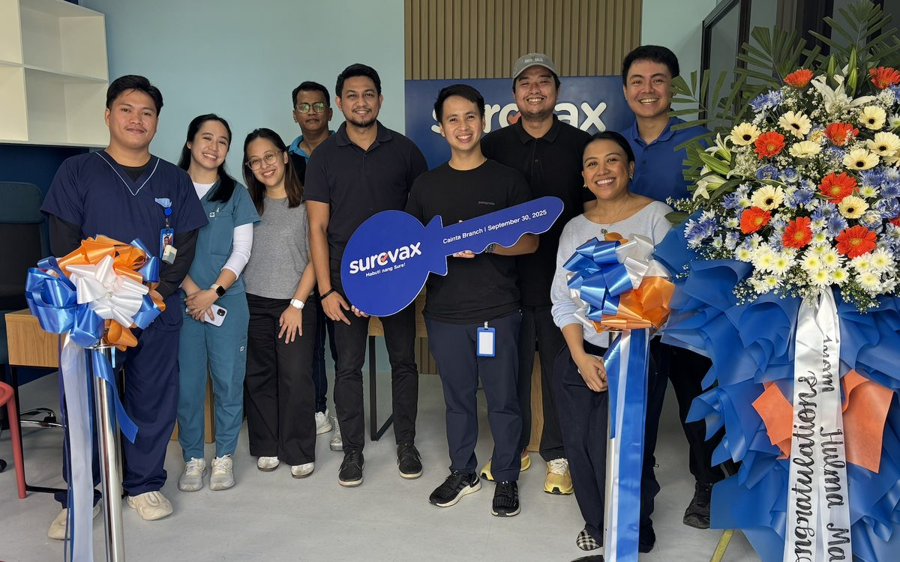
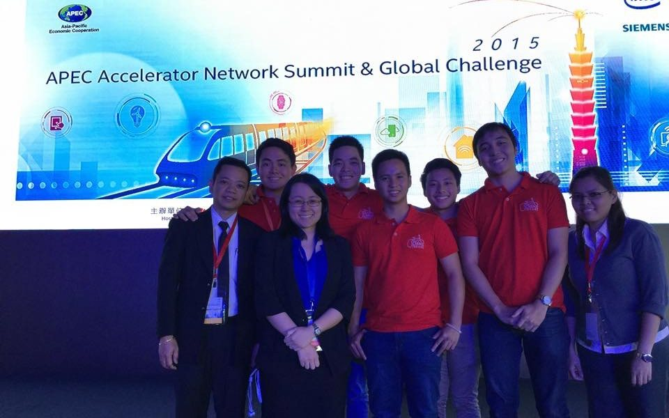
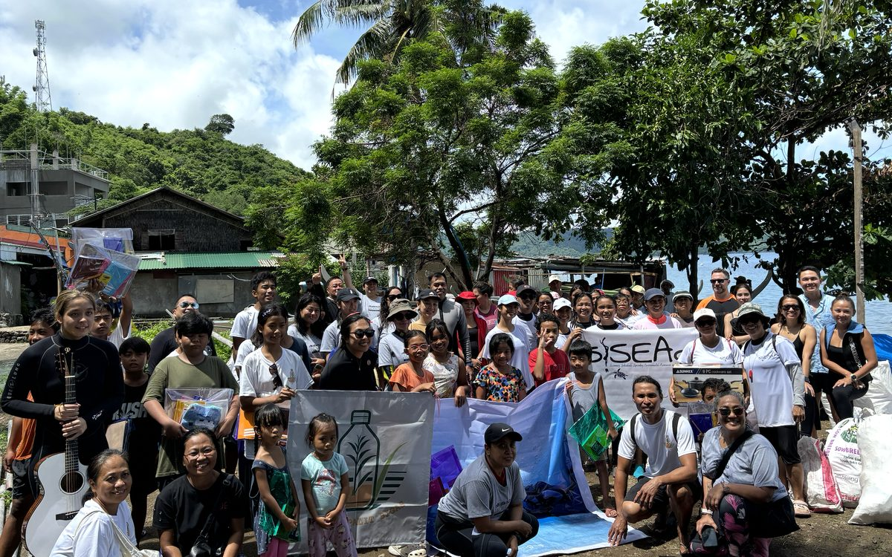

SureVax
Acquired an underperforming 3-clinic vaccination network and scaled it to 8 clinics, reaching €500,000 in annual revenue within a year and signing 12 housing associations as B2B partners.
Hello, I'm
Entrepreneur, civil engineer and INSEAD MBA candidate building businesses that serve communities.
I'm a Filipino entrepreneur and civil engineer, currently pursuing my MBA at INSEAD in France and Singapore. Most recently I acquired and scaled SureVax, growing a network of vaccination clinics from 3 to 8 sites in a year.
Before that I led sustainability work at Semirara Mining and Power, ran nationwide field operations as a congressional nominee, and founded UP Bike Share as a student. I also sit on my family's holding company board, and I care most about building organizations that leave communities better off.
Volunteer with the Marine Education and Preservation Institute, advanced open water diver, amateur sailor, golfer and (currently injured) rock climber. Native English and Filipino speaker.

Acquired an underperforming 3-clinic vaccination network and scaled it to 8 clinics, reaching €500,000 in annual revenue within a year and signing 12 housing associations as B2B partners.

Built a campus mobility program with 200+ volunteers and 180 bikes serving 2,000+ weekly trips, backed by a €220,000 government grant for RFID tracking and locking technology.

Spawned 5,000+ endangered native giant clams at Semirara, and personally raised over €5,000 for ocean cleanups that removed about 9 metric tons of plastic over four years.
2025 – 2026
Grew clinic revenue 10–30% per site and led the rollout of 5 new sites end to end, including healthcare licensing and compliance.
2023 – 2024
Led a 4-person team on community and regulatory engagement, ran marine biodiversity and reforestation programs, and launched an internship for 50 high school students a year.
2021 – 2022
Directed a 12-person core team and 600+ staff and volunteers on a €400,000 budget, engaging 150,000+ voters across 18 provinces.
2021 – Present
Appointed to the family holding company board and council in 2026 after serving as board observer across construction, mining, power, cement and agriculture companies.
2021 – 2026
Designed a youth development program training 100+ new shooters a year, with 5 alumni reaching international competition.
2026 – 2027
France and Singapore. VP for Treks at MountaINSEAD; member of the INDEVOR Social Impact and Family Business clubs.
2017
Summer program covering sustainable design thinking, smart cities and urban politics.
2014 – 2020
Garrick Yao Memorial Award for Service, given to two engineering students for academic excellence and service.
Interested in healthcare, family business, sustainability or a search fund? I'd love to hear from you.